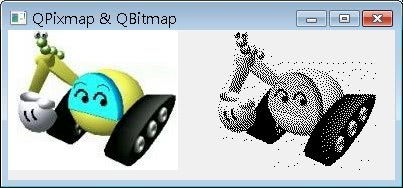

在處理影像資料上，Qt提供了QPixmap、QBitmap、QImage與QPicture等類別。
QPixmap繼承了QPaintDevice，您可用以建立QPainter並於上進行繪圖，您也可以直接指定圖案載入Qt所支援的圖檔，像是BMP、GIF、JPG、JPEG、PNG等，並使用QPainter的drawPixmap()繪製在其它的繪圖裝置上。您可以在QLabel、QPushButton上設定QPixmap以顯示圖像。QPixmap是針對螢幕顯示圖像而設計並最佳化，依賴於所在平台的原生繪圖引擎，所以一些效果的展現（像是反鋸齒），在不同的平台上可能會有不一致的結果。
QBitmap是QPixmap的子類別，提供單色圖像，可用於製作游標（QCursor）或筆刷（QBrush）物件。下面的程式載入相同的圖檔，以觀看QPixmap與QBitmap的呈現效果：
#include <QApplication>
#include <QWidget>
#include <QPainter>
#include <QBitmap>
class PainterWidget : public QWidget {
protected:
void paintEvent(QPaintEvent*);
};
void PainterWidget::paintEvent(QPaintEvent *event) {
QPixmap pixImg("caterpillar.jpg");
QBitmap bitImg("caterpillar.jpg");
QPainter painter(this);
painter.drawPixmap(0, 0, pixImg);
painter.drawPixmap(200, 0, bitImg);
}
int main(int argc, char *argv[]) {
QApplication app(argc, argv);
PainterWidget pWidget;
pWidget.setWindowTitle("QPixmap & QBitmap");
pWidget.resize(400, 150);
pWidget.show();
return app.exec();
}執行後的結果如下圖所示：

QPixmap使用平台的繪圖引擎，在不同的平台所呈現的效果不一，無法提供個別像素的存取，QImage使用Qt自身的繪圖引擎，可提供在不同平台上相 同的圖像呈現效果，並可透過setPixpel()、pixel()等方法，直接存取指定的像素，例如在Qt的QImage文件中，就有提供以下的範例：
 |